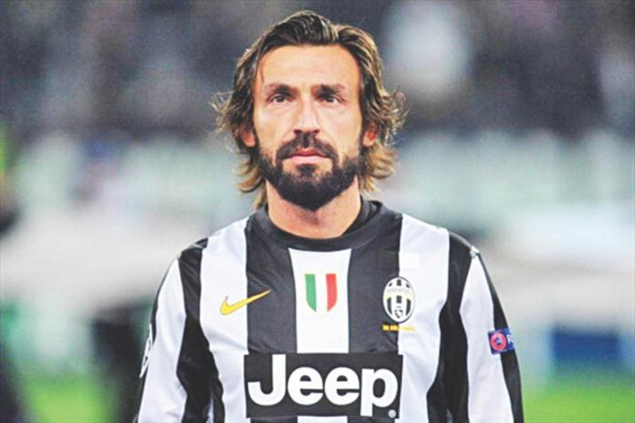

|  |
Andrea PirloFootballer Pirlo Wikipedia Andrea Pirlo Ufficiale OMRI (born 19 May 1979) is an Italian former professional footballer. Pirlo was usually deployed as a deep-lying playmaker in midfield for both his club and national teams and he is widely regarded as one of the greatest ever exponents of this position due to his vision, ball control, technique, creativity and passing ability, as well as for being a free-kick specialist. |
| Year | Position |
|---|---|
| 2002–03 | UEFA Champions League |
| 2006–07 | UEFA Champions League |
| 2006 | FIFA World Cup |
| Touch | ✰✰✰✰ |
| Technique | ✰✰✰✰ |
| Dribbling Ability | ✰✰✰✰ |
| Creativity | ✰✰✰✰ |